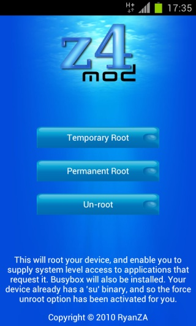

z4root version 1.3.0
-

Please turn your phone in landscape mode, so you can read the following instructions.
-
I highly recommend to not use this root method, because it's out of date use SuperOneClick instead.
I recommend this root method to old devices or not up-to-date devices.
If you look at the screenshot, you can see three options: Temporay Root, Permanent Root and Un-root.
Temporay Root = Only temporay root acces will lose root on reboot.
Permanent Root = The application shall install superuser.apk to your system useing the exploits found in Android 2.3.5 and lower.
Un-root = Un-root your device.
Download z4root


|
Source: |